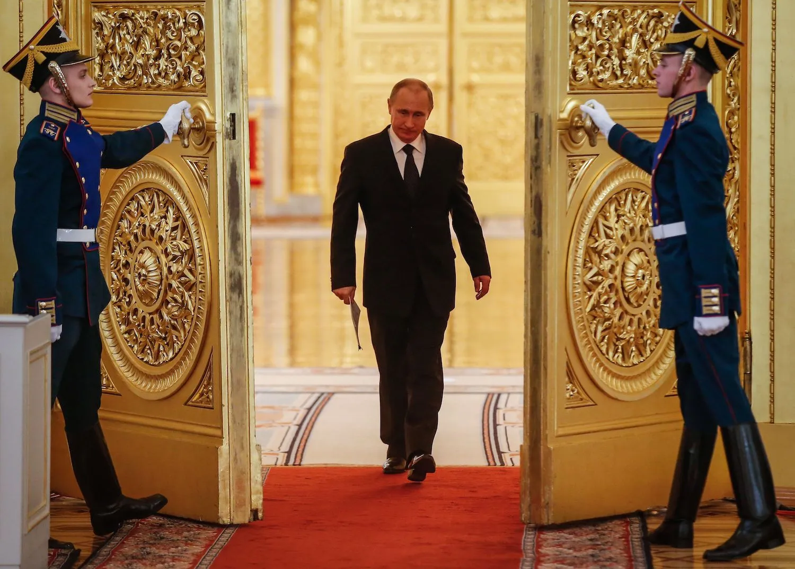

The key difference between Putin's ideology and Soviet communism is its orientation in time. Communism is a future-oriented ideology. Putin's dictatorship glorifies the imperial past: both pre-revolutionary and the Soviet-era one.

Fig. 1. Russian President Vladimir Putin enters a hall before a meeting at the Kremlin in Moscow on March 17, 2015. Note that the uniform of his FSB guards in the Kremlin is modeled on 19th century imperial uniforms. Putin makes his empire great again. Sergei Ilnitsky/AFP/GETTY IMAGES
Putin-era culture is revivalist. Putin's favorite tsar is Alexander III who, after the assasination of his father, stopped political reforms initiated by his father and favored revivalism in arts and architecture.
Fig. 2. Russian President Vladimir Putin opens a memorial to a medieval Prince Alexander Nevsky on September 11, 2021 on the border with Estonia (a NATO alliance nation). Note the image of Prince Nevsky made in the revivalist style of a medieval icon. The unveiling of this beligerent monument on the border with Estonia was part of information war against the West. Six months later in February 2022, Putin unleashed the full-scale war against Ukraine. Photo Kremlin.ru